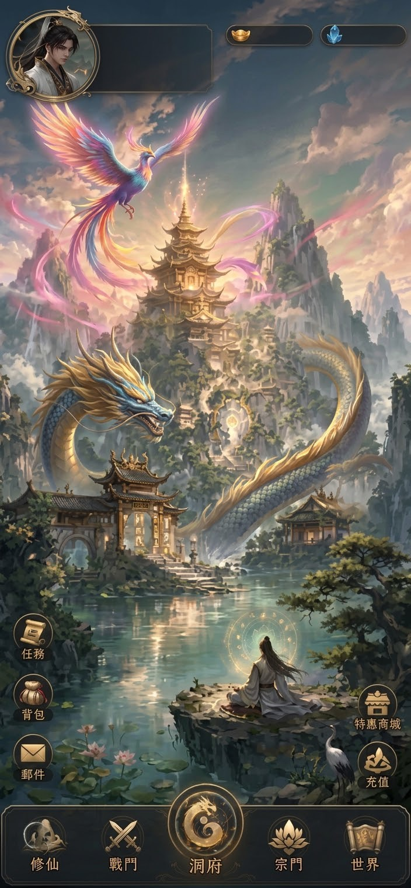

韓立 中立
凡人 1階
Lv.1
戰力 5
0
0
修煉效率：100%
修仙
境界：凡人 1階
等級：Lv.1 (0.0%)
戰力：5
金丹：築基期開啟丹田
元神：未凝聚
天賦：可用 0 點
資質：尚未測試
當前壽命：16 歲
剩餘壽元：60 年
勢力：散修
靈石：0
聲望：0
當前狀態：在宗門 靜修 (安全區)
修士道號：韓立
力量 10
體質 10
悟性 10
靈力 10
敏捷 5
魅力 10
(輪迴次數: 0)
自動輔助設定
丹藥冷卻（每 5 秒）：氣血 就緒 / 靈力 就緒
※【九轉還魂丹】【造化神髓液】不會被自動購買
靈草 0
獸丹 0
武學積分 0
⛏️礦石 0
☯️善惡
🙏功德 0
💎七彩補天石 0
🔮破障丹 0
🌠星允鐵 0
凡品靈草 0
上品靈草 0
極品靈草 0
仙品靈草 0
⚔️ 仙魔戰場實況
🐉
索敵中
無敵意目標
VS
韓立
劍氣縱橫，天地元氣激盪...
歷練日誌
宗門與設施
宗門任務
活動

韓立 中立
凡人 1階
Lv.1
戰力 5
0
0
0
氣血
靈力
修為
修煉效率：100%